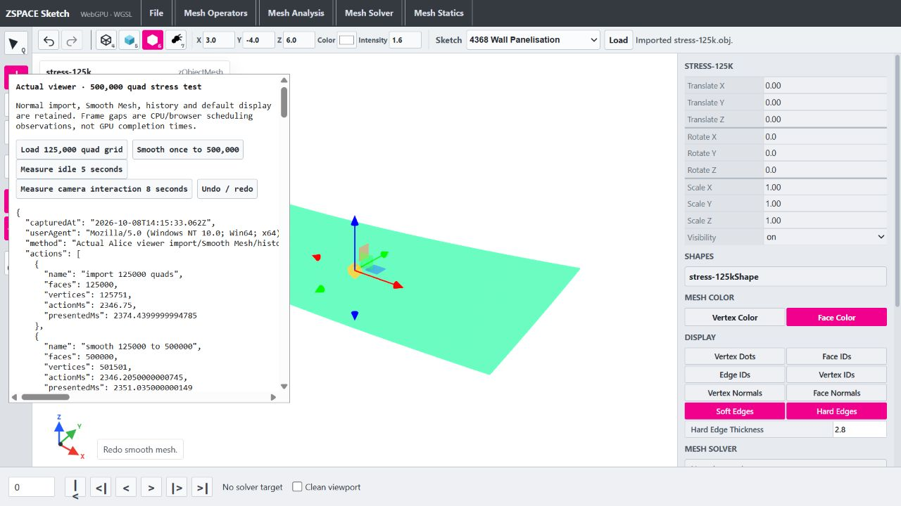

Viewer reconstruction optimization
08 October 2026 · exact 500,000 quads · default display and history retained.
History restoration benefits from boundary reuse. Nearby redo: 1.27 -> 0.68 seconds. Smooth remains around 2.1–2.35 seconds in this session; a consistent full Smooth gain is not established.
Implemented
- Extract face-color surface expansion into meshSurfaceBuffers.ts. Replace per-triangle color arrays, triangle arrays, iterator objects and destructured tuples with scalar values and indexed corner loops. Preserve triangle order, floating arithmetic, Float32 assignment, supplied face colors, vertex-average/default fallback and missing-normal behavior.
- Add private per-SceneObject boundary caches in a WeakMap. Each cache retains at most two recent topologies for history reuse, with owned Uint32 snapshots and full value comparisons on every lookup. In-place edits, changed counts and polygon/triangle fallback invalidate results without trusting array identity or hashes.
- Cache only boundary classification; surface buffers, attributes, edge weights, crease paths and scene publication retain existing behavior. Custom renderer callback paths retain their original behavior.
Node phase medians — three alternating trials
| Quads | Old surface ms | New surface ms | Boundary rebuild ms | Verified cache hit ms | Snapshot bytes |
|---|
| 125000 | 27.67 | 17.32 | 95.78 | 0.66 | 2500000 |
| 500000 | 103.16 | 50.94 | 550.49 | 3.98 | 10000000 |
Nearby browser actions — single samples
| Action | Before ms | First optimized ms | Final optimized ms |
|---|
| import 125000 quads | 2012.2 | 1945.0 | 2346.8 |
| smooth 125000 to 500000 | 2181.7 | 2079.8 | 2346.2 |
| undo smooth | 273.9 | 166.3 | 190.8 |
| redo smooth | 1272.3 | 583.4 | 678.6 |
Smooth phases
Inclusive totals contain child phases; do not sum them together.
| Phase | Before ms | Final after ms |
|---|
| history-before | 12.14 | 9.08 |
| typed-input-allocate-copy | 1.88 | 1.21 |
| native-input-install-and-export | 107.28 | 121.37 |
| typed-input-free | 0.02 | 0.02 |
| upload-and-native-install | 109.3 | 122.72 |
| cpp-smooth-and-export | 651.73 | 779.4 |
| owned-buffer-readback | 46.6 | 47.65 |
| payload-validation | 68.22 | 72.8 |
| surface-geometry | 311.36 | 362.24 |
| edge-geometry | 0.04 | 0.06 |
| boundary-incidence | 550.29 | 530.76 |
| wire-geometry-inclusive | 681.55 | 609.55 |
| scene-publication-inclusive | 1141.99 | 1137.26 |
| camera-fit | 63.31 | 71.62 |
| history-commit-inclusive | 39.62 | 43.38 |
Redo phases
Inclusive totals contain child phases; do not sum them together.
| Phase | Before ms | Final after ms |
|---|
| payload-validation | 138.58 | 207.15 |
| surface-geometry | 267.06 | 278.69 |
| edge-geometry | 0.05 | 0.05 |
| boundary-incidence | 657.46 | 4.71 |
| wire-geometry-inclusive | 756.88 | 89.59 |
| history-redo-inclusive | 1271.73 | 677.59 |
Verification
- Baseline npm run build passed; post-extraction/optimization build passed; final restored optimized source build passed. TypeScript + Vite verified, existing bundle advisory retained.
- 62 surface-buffer cases are byte-identical to the preserved former implementation, including exactly 500000 grid quads. Includes supplied/partial face colors, averaged/missing vertex colors and supplied/missing normals.
- 60 full renderer fixtures match ordered geometry attribute/index bytes, wire paths, visibility, line colors/widths and crease behavior. Repeated publication on the same object retains parity.
- Focused cache contracts passed: content-equivalent typed copies hit; raw connectivity/count/triangle-index edits miss; two recent states are reused; a third state evicts the least recently used entry. Owned snapshots are not mutated by input edits.
- Nearby browser comparison ran optimized, preserved before, then final optimized renderer in fresh page loads. Temporary baseline source was restored byte-exactly (SHA256 CD3CA26CEFB41DBD52A82EBCC3E688541BCFA1C1E2A9E77BF9752B714E357C97) and final build passed. No simultaneous build/Node benchmark during browser captures.
- Actual WebGPU viewer imported 125000 quads, smoothed to 500000/501501 vertices, verified undo/redo counts and sampled default face-color/wire-shaded display, idle and brief wheel zoom at 1280x720 CSS, DPR 1.5.
- git diff --check passed for modified renderer. Installed core runtime SHA256 remains 27daad481b9c4a5d6b403b2cf15f79f4f2d7bcd066e3bbefb624d30c57799653; this is viewer-only, no C++/ABI changes or native/WASM rebuild needed.
- All dirty/untracked source, sketches, OpenUSD/IO and runtime work preserved. No commit or push.
Limits and memory tradeoff
- Three alternating-order Node trials measure surface expansion and boundary classification/lookup only, excluding browser/GPU/history. Before surface timing includes lightweight THREE geometry/attribute wrappers; after buffer timing excludes those wrappers. Both exclude bounding-sphere work.
- Browser captures are exploratory single-run samples per state, with two optimized runs around one nearby before run; they do not establish a stable action median or universal speedup. Smooth before 2181.7 ms, optimized 2079.8 and 2346.2 ms: no consistent full Smooth gain established.
- Nearby undo 273.9 -> 190.8 ms, redo 1272.3 -> 678.6 ms. Earlier optimized redo 583.4 ms. Cold Smooth cannot reuse the new output topology and still constructs a boundary map.
- Cache adds exact topology snapshots: 2.5 MB for 125k quads and 10 MB for 500k quads (12.5 MB combined per object for this two-state history), plus small boundary sets. Two entries bound retention, and the WeakMap does not itself keep a SceneObject alive. No total/peak/GPU memory reduction is claimed.
- Final rAF median/p95 idle gaps 16.655/16.69 ms; brief camera gaps 16.655/16.685 ms, max33.325 ms; no >50 ms gaps in these samples. This is browser scheduling evidence, not GPU completion/FPS or continuous orbit verification.
- The comparison harness uses the preserved renderer in ignored wasm/tmp/viewer-reconstruction-before. Cold map allocation, remaining surface-buffer allocation/bounds, snapshot cloning, GPU publication and main-thread pauses remain.
- The broad responsiveness/history roadmap remains incomplete. Existing solver-only dynamic GPU updates are preserved; this step does not introduce broader renderer reuse or fix selection/display behavior.
Next priority: Reduce allocation in first-time boundary classification (final Smooth boundary phase about 531 ms) using contiguous scratch buffers while preserving first-seen order and corner-use rules. C++ smooth/export remains about 779 ms in that browser sample; moving computation off the main thread requires a separate ownership/serialization design.
Verified 500k scene after redo

Changed files this milestone
- ../zspace_alice_webviewer/src/renderers.ts
- ../zspace_alice_webviewer/src/meshSurfaceBuffers.ts
- ../zspace_alice_webviewer/src/meshBoundaryCache.ts
- ../zspace_alice_webviewer/tests/meshReconstruction.test.mjs
- ../zspace_alice_webviewer/reports/Alice-Viewer-Implementation-Roadmap.md
- tests/performance/viewer-reconstruction-parity.mjs
- reports/generate-viewer-reconstruction-report.py
- reports/viewer-reconstruction-parity.json
- reports/viewer-reconstruction-before.json
- reports/viewer-reconstruction-after-first.json
- reports/viewer-reconstruction-after.json
- reports/viewer-reconstruction-optimization.json
- reports/viewer-reconstruction-optimization.html
- reports/viewer-reconstruction-500k.png